Profileの作成
本ページではProfileの追加手順 ~ 編集手順について記載しています。
Mayaをベースに表情を調整するのか、FCSをベースに表情を調整するのかは任意で使い分けることができますが、
最初は「Both」での使用をオススメします。
解析動画のimport
Profileを作成する前にまず使用する動画をFCSに読み込みます。
Videosウィンドウでは解析したい動画を開いたり、インポートすることができます。
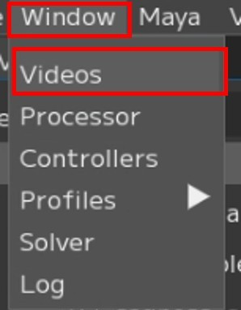 |
Window→Videosで |
Note
Videosウィンドウについての説明はユーザーガイド/Menu/Window/Videosをご覧ください。
1.【Import】を押すとウィンドウがポップアップされるので、

2.解析したい動画をクリックします。

Note
Shift+クリックで複数同時にimportできます。
3.【Select Video Rotate】ウィンドウが開くので、【Comfirm】を押します。

Note
import時に、左下の数字で動画を時計回りに回転させることができます。
4.Videosウィンドウにimportした動画が表示されます。

Profile（プロファイル）について
様々な表示のProfileを追加することで解析の精度が上がっていきます。
単純に数が多ければ良いわけではなく、似た表情のProfileに対し、コントローラーの数字が違ってしまった場合、ノイズになってしまうため注意が必要です。
また、解析する動画毎にProfileを1つ以上作成することを推奨しています。
Note
解析する動画毎のProfileに加えて、ROM体操と呼ばれる約50個のProfileを作成することを推奨しています。
ROM体操の表情については、スターターキット同梱のPDFファイルをご参照ください。
読み込んだ動画をFCSで開く
開きたい動画ファイルの上で ”右クリック→【Open】” もしくは ”ダブルクリック”
VideoPlayer上に動画が表示されます。
動画ファイル名の上で右クリック → 【Open】

{kind=link}
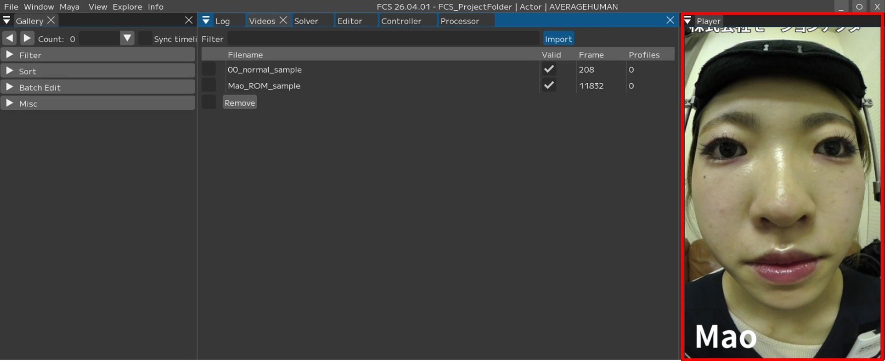
Profileの追加方法
VideoTimelineウィンドウのスライダーを動かし、表情の登録を行いたいフレームで止め、
【+】を押すと、Galleryに指定したフレームの画像が追加され、Editorが開きます。

プロファイルを追加した際の枠について
赤：数値がデフォルト状態/未編集のProfile
緑：「Neutral」に ☑ を入れて登録したProfile
青：選択中（編集中）のprofile
黒：「Enabled」の ☑ を外し、「Disabled」で登録したprofile
白：リターゲット後、登録したprofile
Neutralの表情の登録
Neutral表情とは、アクターの表情筋に力が入っていないナチュラルな表情のことです。
セッション内で必ず一つNeutral表情を設定してください。
Neutralに ☑
任意の名前に変更
Save

Note
Profileの名前は必ずしも変更する必要はありません。
Mayaで表情を調整する場合
1.VideoTimelineウィンドウのスライダーを動かし、表情の登録を行いたいフレームで止め、
【+】を押すと、Galleryに指定したフレームの画像が追加され、Editorが開きます。

2.Galleryに追加された画像とEditor画面の画像と同じであることを確認してください。

3.Mayaのコントローラーリグで、追加したアクターの表情と同じになるようにキャラクターの表情を調節します。

4.【From Maya】をクリックすると、Mayaでの調整情報がFCSに反映されます。
{kind=link}
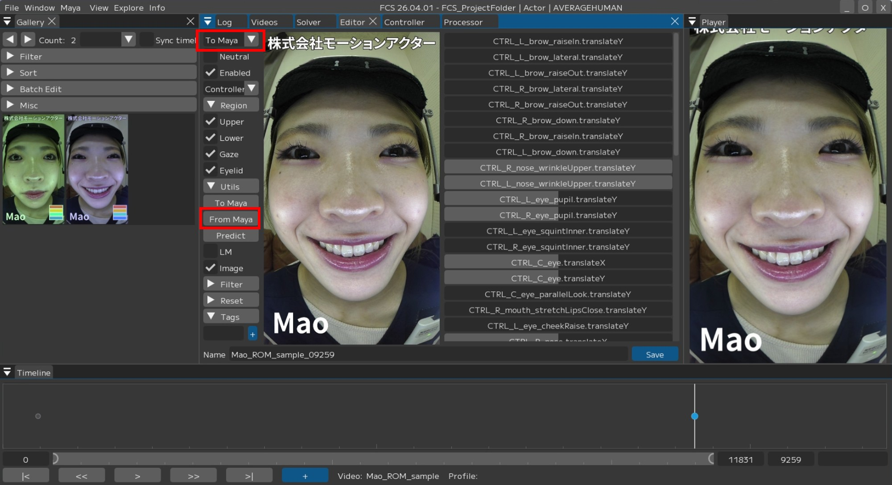
Note
【To Maya▼】のプルダウンで「From Maya at save」もしくは「Both」にしている場合は、調整した数値が自動で同期されます。
Note
コントローラーの登録忘れがあった場合は再度開いたときに作成した表情と異なる場合があります。
その際は、再度登録し忘れたコントローラーを登録しプロファイルの再登録を行ってください。
5.Nameを任意の名前に変更し、【Save】します。

FCS上で表情を調整する場合
1.VideoTimelineウィンドウのスライダーを動かし、表情の登録を行いたいフレームで止め、
【+】を押すと、Galleryに指定したフレームの画像が追加され、Editorが開きます。
2.Galleryに追加された画像とEditor画面の画像と同じであることを確認してください。
Syncが No Sync の場合はProfileの自動情報共有が行われないためMaya上は1つ前に登録した表情のままになっています。
{kind=link}
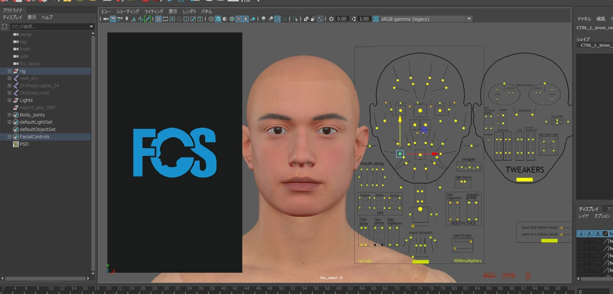
Note
Syncを「Both」にした状態で開きなおすと デフォルトの表情になります。
既にしている場合はスキップ
3.Editor上の【Controller】で、追加したアクターの表情と同じになるようにキャラクターの表情を調節してください。

Note
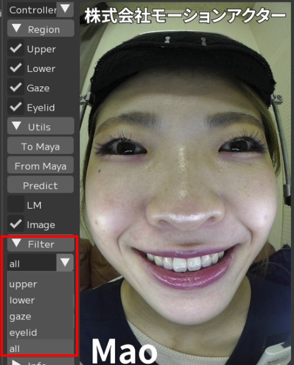 |
▼Filterから文字入力 |
4.【To Maya】をクリックします。
{kind=link}
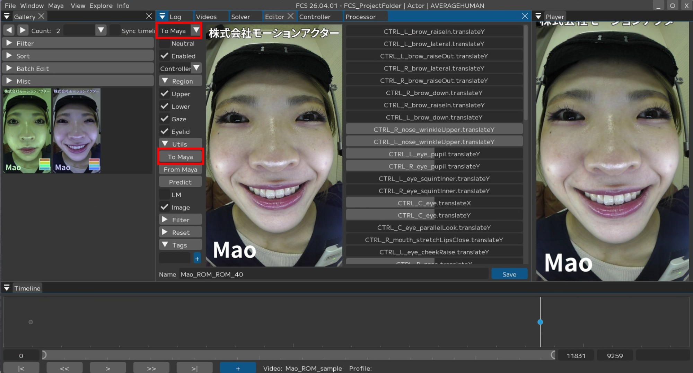
Note
Syncのプルダウンで「To Maya」もしくは「Both」にしている場合は、調整した数値が自動で同期されます。
5.FCSで調整した内容がMayaに反映されます。
Profile タグ機能
Profile作成時にProfileに「タグ」を付けることができます。
本機能は、Galleryに登録されたProfileを効率的に管理し、解析に使用する表情をスムーズに切り替えるための機能です。
1.Editorウィンドウの【▶Tags】を開き、テキストボックスにタグの名前を入力してください。
【＋】を押すとタグが追加されます。
{kind=link}
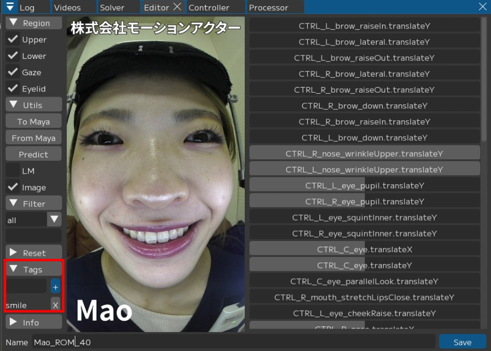
2.Galleryウィンドウの ☑ Advanced にチェックを入れると下記項目が表示されます。
{kind=link}
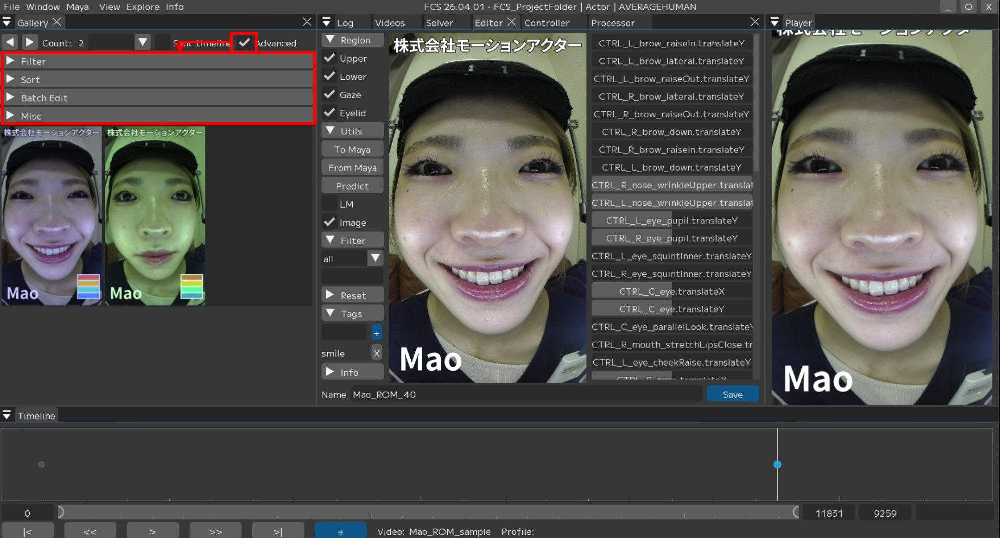
Note
▶ Filter：表示するProfileの絞り込みを設定します。
▶ sort：Profileの表示順を変更します。
▶ Batch Edit：表示されているProfileを処理に使用するかなどを設定します。
▶ Misc：Galleryの表示などその他設定を変更できます。
詳しくはユーザーガイド/Menu/Window/Profile/Galleryをご確認ください。
3.▶ Filter → Tagの入力欄から作成したタグを選択すると、タグを付けたProfileのみがGalleryに表示されます。

使用例
Batch EditでGalleryに現在表示されているものに対して、「一括で使用・不使用（ON/OFF）」を切り替えることができます。
1.Propertyでどの項目に対して使用・不使用（ON/OFF）を一括設定するか選択します。
{kind=link}
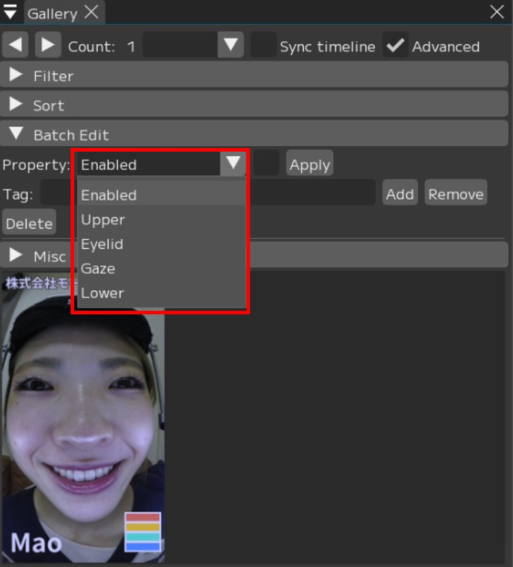
2.使用（有効）する場合は ☑ チェックを入れ、不使用（無効）にする場合は □ チェックを外し、【Apply】を押します。
{kind=link}
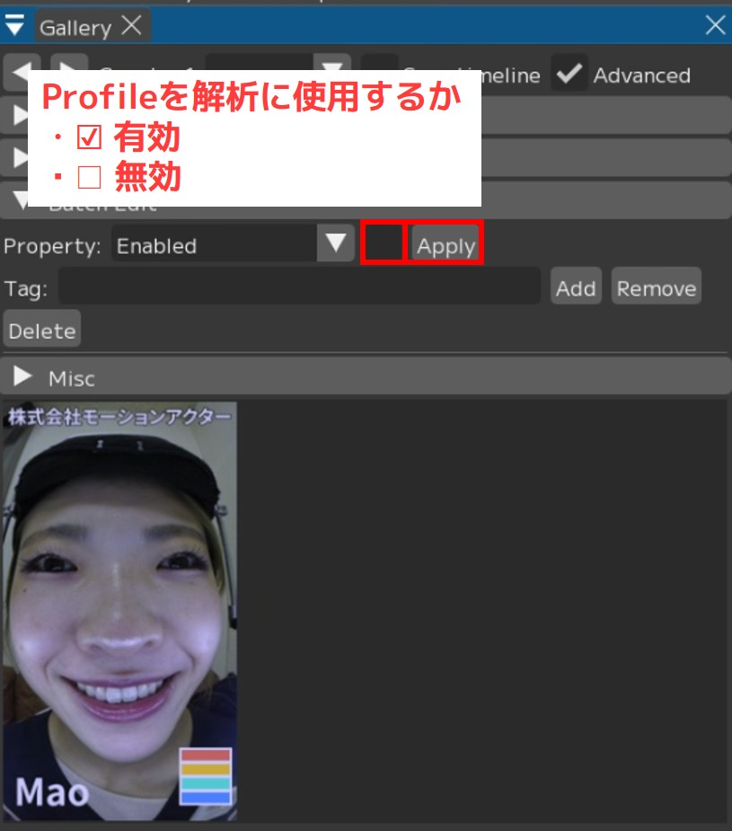
3.不使用にした場合、表示のProfileがグレーアウトします。

Note
使用するProfileを切り替えることで、下記のように出力を調整できます。
①特定の表情への絞り込み
「ハの字眉」や「怒り」など、特定のタグをONにすることで、狙った表情を優先的に出力・表示させることが可能です。
② 精度の向上（ノイズの除去）
「カメラの向きが異なるプロファイル」などにタグを付け、Filter機能からそのタグが付いたプロファイルのみを表示し、
一括で「不使用」に設定することで、現在の環境に最適なプロファイルのみが適用され、表情の検出精度を高めることができます。
Predict機能
本ソフトでは、作成したProfileから自動でリターゲットをするPredict機能を搭載しています。
ある程度の数のProfileを登録した後で、追加のProfileを登録する際にPredict機能を使えば、
登録済のProfileを基にソフトが予想した表情を作成してくれます。
Warning
Predictで自動リターゲットする精度は、登録済のProfileの精度と連動します。
また、動画全体を解析するわけではございません。
1.VideoTimelineウィンドウのスライダーを動かし、表情の登録を行いたいフレームで止め、
【+】を押すと、Galleryに指定したフレームの画像が追加され、Editorが開きます。
Galleryに追加された画像とEditor画面の画像と同じであることを確認してください。
Galleryに追加される |
Editor画面に表示されている画像が同じか確認する |
2.Predictを実行 valueの数値が変動します。
{kind=link}
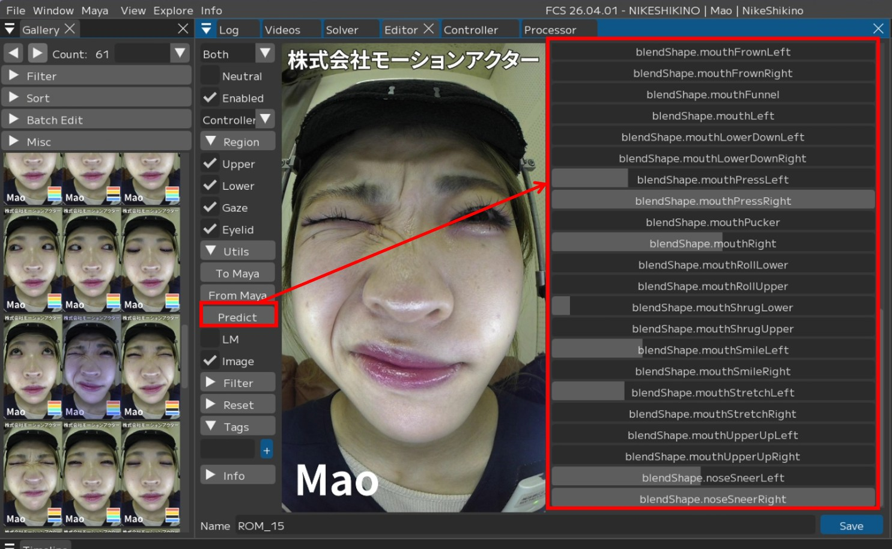
3.MayaにPredict結果が出るので、
調整が必要な場合は調整を行い、登録できる内容になったら

4.【Save】します。
{kind=link}
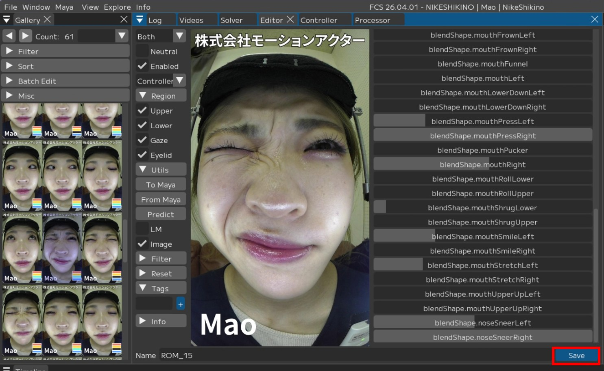
Profileを作成するときの注意点
〇目を閉じる/薄目の時のGaze登録について
Warning
目を閉じる・薄目など黒目が見えないものは登録する際にGazeの ☑ を外してください
解析結果の精度が低下してしまう可能性があります
例：眉のぎゅっと絞る動きを作りたい時

1.表情を調整した上で

2.Regionのgazeの ☑ を外し、【Save】します。
{kind=link}
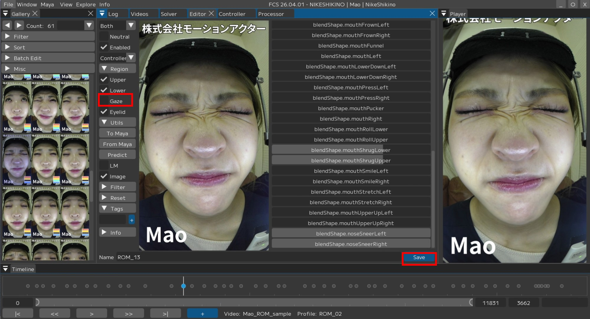
〇解析結果が好ましくない場合
Profileを作成する際に、解析したい動画ごとに1つ以上Profileを作成するようにしてください。 Profileを作成していない場合、精度が十分ではない解析結果が出力される可能性があります。
Warning
解析動画ごとに1つ以上Profileを作成していない場合、アニメーション出力の際に警告がでます。

〇登録済みのProfileを編集する場合
Galleryから調整したい表情のProfile(画像)をクリックし開きます。
Editor画面が開いたProfileと同じ画像であることを確認してください。

Note
Gallery上のProfileをクリックすると、対象の表情がMayaへ反映されます。
このとき、反映されるのは「チェックが付いているRegion」のみとなります。
目線など、チェックがついていないRegionは読み込み前の数値が保持されるため、
Profileを読み込んだ際に一見すると表情が正しく反映されていないように見える場合があります。
〇Profile数の確認方法
登録したProfileの数は、Videosウィンドウの「Profiles」をご参照ください。

「Profiles」が表示されない場合は、
メニューバー上部で右クリック
「Profiles」に ☑ を入れる で表示されます。
{kind=link}
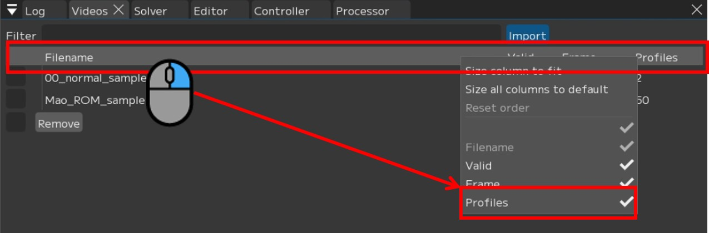
トラブルシューティング
〇【+】を押してもGalleryにProfileが追加されない場合
【+】を押してもGalleryにProfileが追加されない場合、
Galleryの表示ウィンドウが小さいケースが考えられます。
その場合、Galleryウィンドウの ◀▶ をクリックすると追加したProfileが表示されます。
◀▶ をクリック

〇同一フレームのProfileを登録できない
FCSでは同一フレームのProfileは重複して追加されないようになっています。
重複した場合、Logウィンドウで
WARNING:Frame ○○ already has a Profile associated with it
と表示されます。
{kind=link}
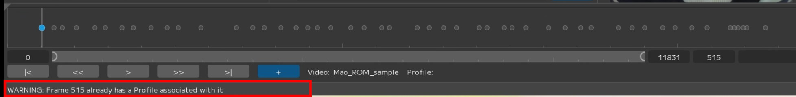